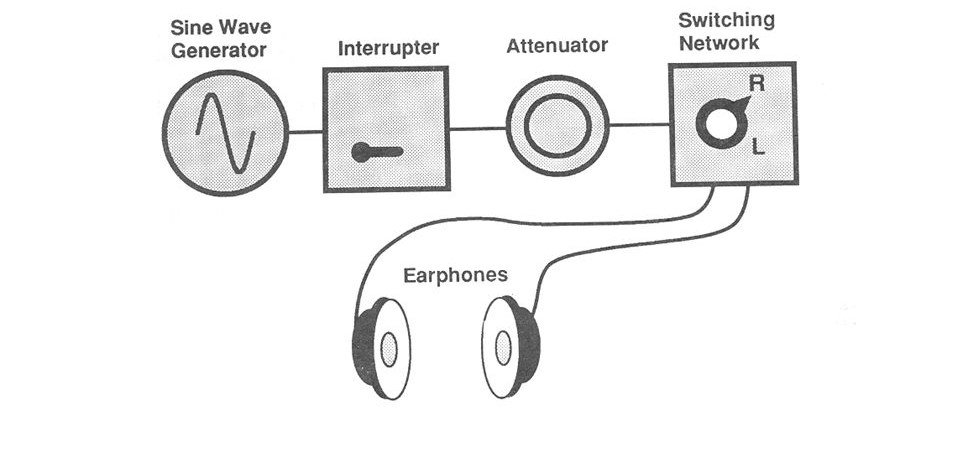

Anatomy

The main parts of an audiometer include:
Earphones or headphones: These are used to deliver pure-tone sounds to the patient's ears during the hearing test. They are usually padded and designed to block out external noise.
Pure-tone generator: This produces pure-tone sounds at different frequencies (measured in Hertz, or Hz) and at different intensities (measured in decibels, or dB).
Masking noise generator: This produces a white noise that is used to mask or block out sounds in the non-test ear during hearing tests.
Patient response button: This is used by the patient to indicate when they can hear a sound during the hearing test.
Control panel: This is where the audiologist or technician can adjust the frequency, intensity, and other settings of the audiometer.
Display screen: This displays the results of the hearing test, such as the patient's hearing threshold levels at different frequencies.
Calibration controls: These are used to ensure that the audiometer is producing accurate and reliable test results.
Power supply: The audiometer requires a power supply to function, either from a wall outlet or a battery.
Working
- The audiometer produces a series of tones that are played through earphones or headphones worn by the patient. The patient is asked to indicate when they can hear each tone by pressing a button or raising their hand. The audiologist or technician performing the test records the patient's responses and adjusts the frequency and intensity of the tones to determine the patient's hearing threshold, or the lowest level of sound the patient can detect at each frequency.
- The test typically begins with a series of tones at the lowest frequency (usually 250 Hz) and the lowest intensity (usually 0 dB). If the patient can hear the tone, the frequency and intensity are increased until the patient can no longer detect the sound. This process is repeated at different frequencies and intensities to determine the patient's hearing threshold at each frequency.
- When the chest piece is placed on the patient's skin, it forms an airtight seal, which allows the sound waves generated by the organs to enter the chest piece. The sound waves then travel through the tubes to the earpieces, where they are amplified and heard by the medical professional.
- The results of the audiometry test are typically plotted on an audiogram, a graph that shows the patient's hearing threshold at different frequencies. The audiologist or technician can then use the audiogram to diagnose any hearing loss and recommend appropriate treatment options.
Types
There are several types of audiometer, including:
- Pure-tone audiometry: This is the most common type of audiometry test and measures the patient's hearing threshold at different frequencies.
- Pediatric stethoscope: This stethoscope is designed for use on infants and children. It typically has a smaller chestpiece and shorter tubing than a standard stethoscope.
- Speech audiometry: This test measures the patient's ability to hear and understand speech at different volume levels.
- Tympanometry: This test measures the movement of the eardrum in response to changes in air pressure. It can help identify problems with the middle ear, such as fluid buildup or a perforated eardrum.
- SBone conduction audiometry: This test bypasses the outer and middle ear and delivers sound directly to the inner ear through bone conduction. It can help identify problems with the inner ear or hearing nerve.
Block diagram of audiometer
Applications
- Medical diagnosis: Audiometry is commonly used by medical professionals to diagnose hearing loss and other hearing-related conditions. It is used to identify the type, degree, and nature of hearing loss, which helps doctors to determine the most appropriate treatment options.
- Occupational health: Audiometry is used to assess the hearing abilities of workers who are exposed to high levels of noise in their workplace. It helps employers to identify workers who may be at risk of hearing loss and to implement appropriate measures to prevent it.
- Hearing aid fitting: Audiometry is used to determine the type and degree of hearing loss in individuals who require hearing aids. This helps audiologists to select the most appropriate hearing aids and to adjust them to the individual's hearing needs.
- Research: Audiometry is used in research studies to investigate the effects of various factors on hearing, such as noise exposure, aging, and genetic factors.